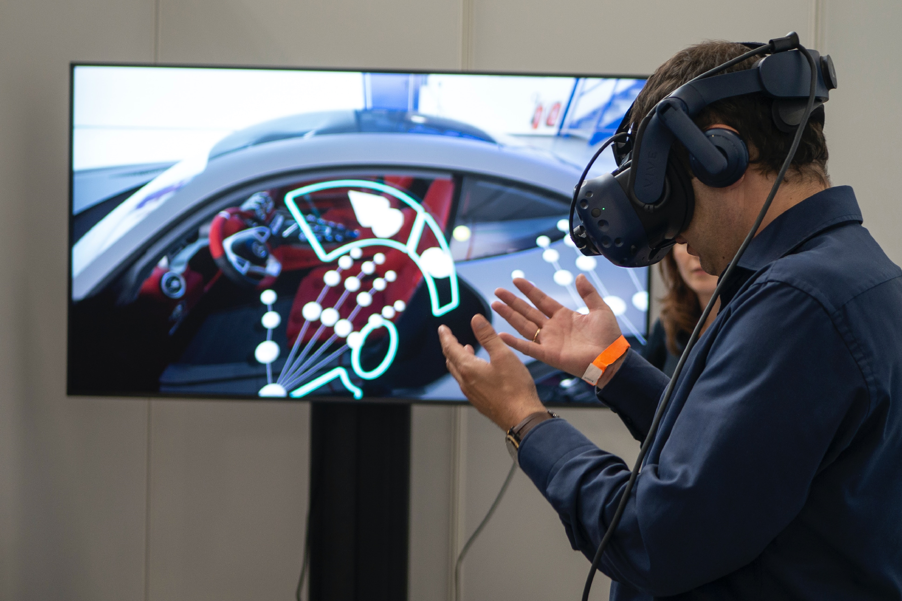

Future Methods of Interacting with Technology
Future innovations in both artificial intelligence and robotics open many possibilities to further enhance interactions with non-human entities such as man made creations and animals. Such innovations not only create a world where humans can seamlessly interact with other entities, but it also opens new opportunities and ways of understanding what it is to be human.
Photo by ThisisEngineering on Unsplash

Robotics in the workplace
Photo by Andy Kelly on Unsplash
The advancement of robotics brings topics such as human-machine interaction into light and provides insight into the type of social and workplace interactions that people may have. Robotics especially allow specialised machines to work in dangerous environments or perform repetitive tasks. Its use in the service industry is also possible, interacting with customers and providing new experiences.

Robotics in the workplace
Photo by XR Expo on Unsplash
The way we currently interact with artificial intelligence can evolve drastically with the increasingly affordable and improving technology of virtual and augmented reality. Virtual AI avatars can provide new interactions and experiences in the virtual world that is cheaper than building a physical body for an AI to inhabit. This kind of change in the future has the potential to greatly change the way we work and play in virtual environments.
Robotics in the workplace
Photo by ThisisEngineering on Unsplash
Prosthetics are already an incredible way for technology to assist people and are a clear example of a method of interaction that is bound to improve in the future. This field of research creates bridges between biology and technology, embracing the duality that would usually conflict.
Robotics in the workplace
Photo by Kyle Hanson on Unsplash
Unlike the other examples that focus on how technology can create new methods of interactions with machines, artificial intelligence can also bring new ways of interaction with animals. The Earth Species Project is one example where efforts into simple animal communication are advancing using artificial intelligence. This technology has the capability to greatly improve our interaction with animals and can offer new perspectives that impact how our world operates.
These future projects grant new ways for people to interact with what isn’t human. Artificial intelligence especially links these projects together, able to bring new methods of social interaction and workplace environments.
Photo by Possessed Photography on Unsplash